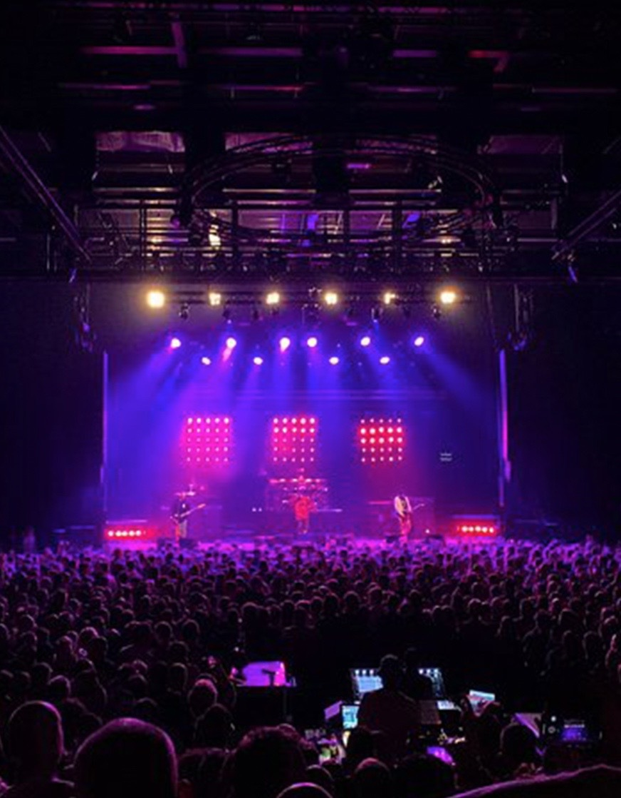
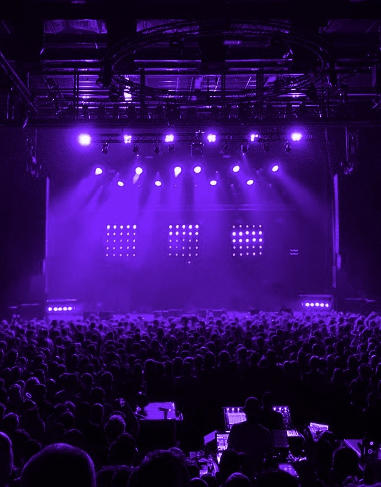
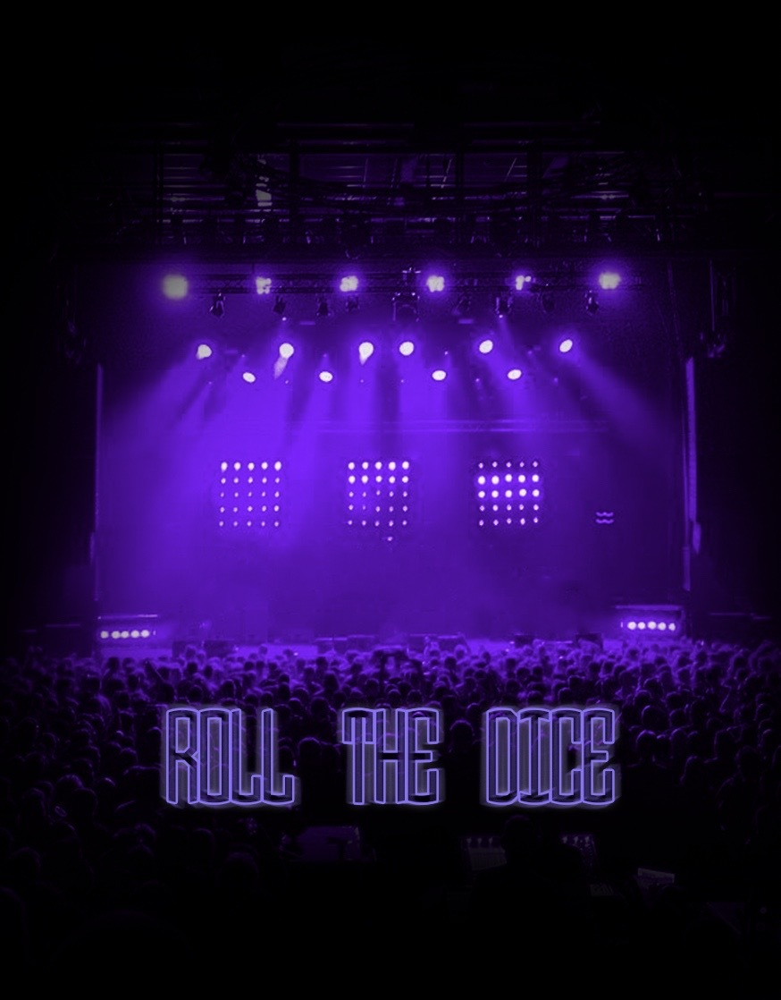
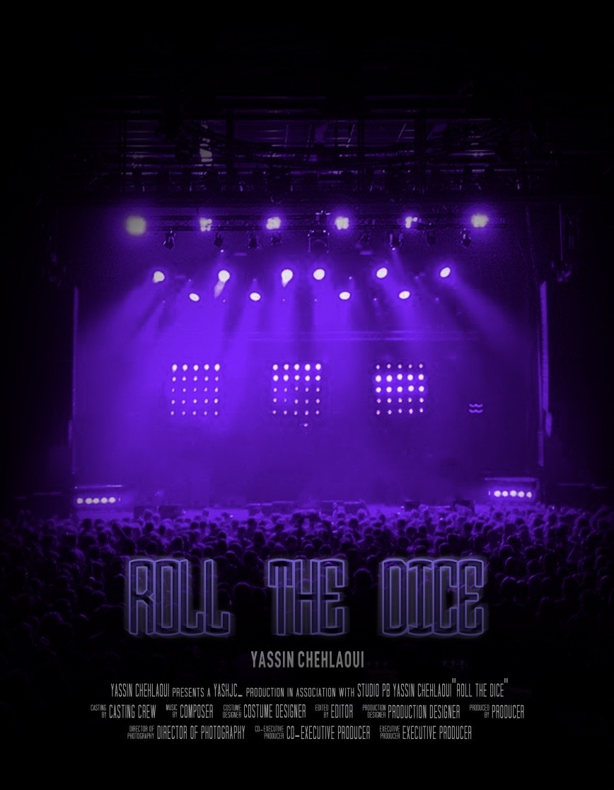
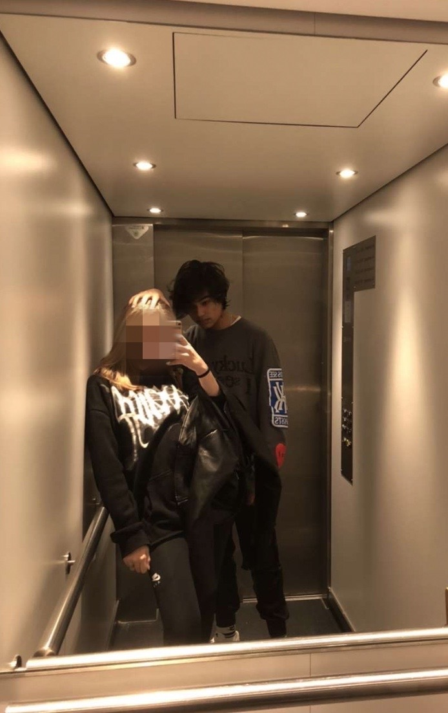
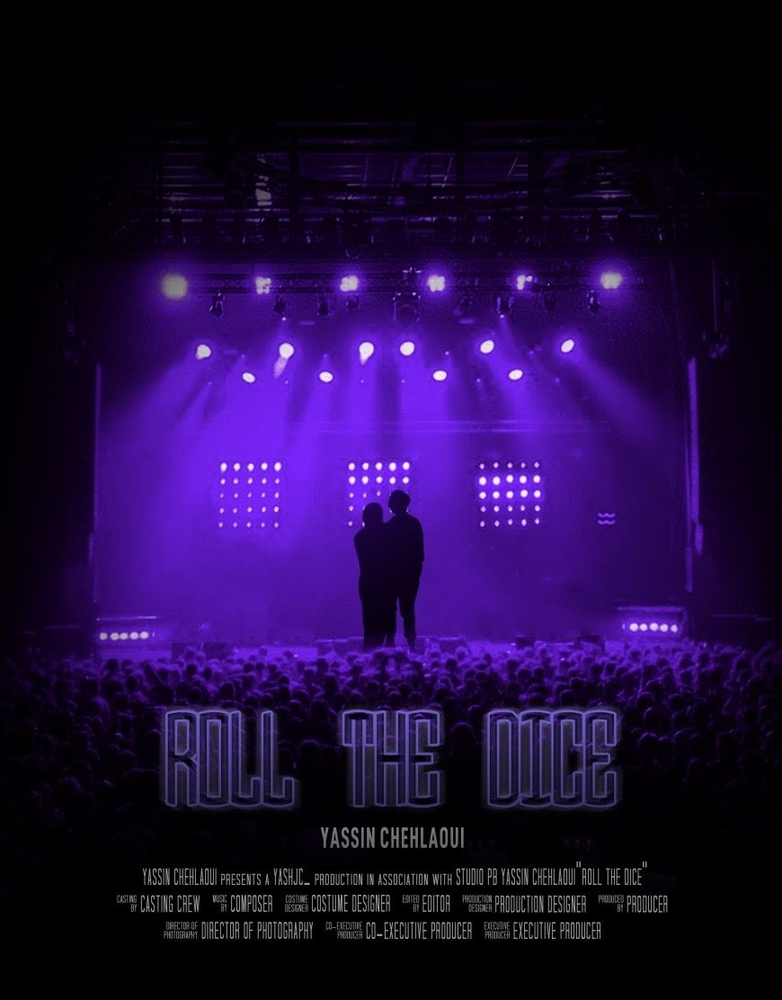
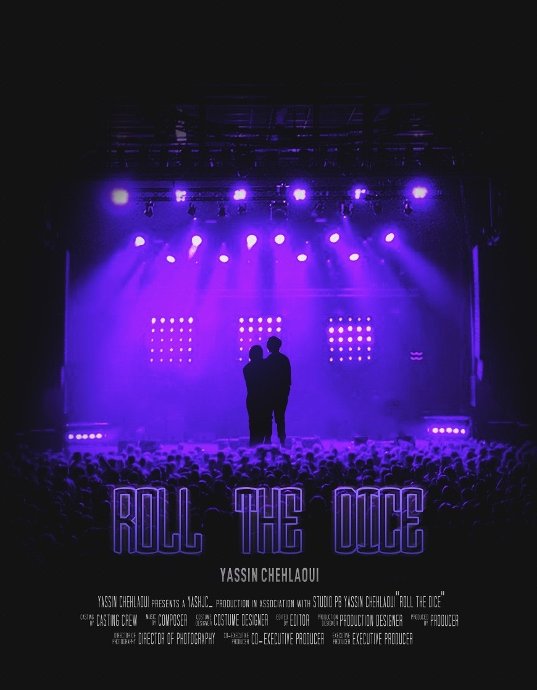

De eerste opdracht die ik dit semester kreeg was om een filmposter van jezelf te maken over waar jij jezelf ziet over 10 jaar. Toen ik dit te horen kreeg, wist ik bijna direct wat ik wilde maken. Ik hou mezelf heel veel bezig met muziek maken, en dan vooral muziek produceren en songwriten. Over 10 jaar hoop ik mezelf nogsteeds bezig te houden met muziek, alleen dan op een veel groter niveau dan nu.
Ik begon met het zoeken naar een foto van een podium om te gebruiken, in mijn gedachten ging ik direct naar het 013 Poppodium in Tilburg. Na een beetje gezocht te hebben, kwam ik op deze foto.
Vervolgens maakte ik deze foto volledig zwart/wit, zodat ik daarna een paarse laag erover kon doen met de blending mode: overlay. Uiteindelijk kwam ik hiermee.
Hierna voegde ik nog een schaduw laag toe om de zijkanten te bedekken, zodat ik de focus meer kon leggen op het podium zelf. Dit was ook het punt waar ik een naam moest bedenken voor mijn filmposter, dus ik kwam op: "Roll The Dice". Ik zie het leven op een manier waarop je risico's neemt en hoopt voor het beste. Dat vind ik echt leven en vooruit komen want zonder risico's blijf je een beetje vast hangen. Na gescrolled te hebben door wat fonts kwam ik uit op de font: "Round Monogram Center". Ik vond dat deze font een best krachtige uitstraling hebben, alsof het een heftige film zou worden met professionele video-editing. Bij mij wekte het een nieuwsgierigheid op en dat is waar ik voor wilde gaan met deze poster in het algemeen. Hier gaf ik een paarse gloed op en ook kopieerde ik de tekst, ik zette die laag achter de originele tekst met een lichte "Radial Blur" filter om de gloed te versterken. Dit was het resultaat.
Vervolgens voegde ik mijn naam toe, zowel als de standaard credits stuk aan tekst die je op alle filmposters ziet. Deze had ik van een template gedownload en deels bewerkt naar hoe ik het wilde. Dit was het resultaat daarvan.
Deze poster ging natuurlijk over mij en mijn leven, dus ik wilde mijzelf en mijn vriendin hier ook terug in voor laten komen. Na toestemming gekregen te hebben van haar, heb ik besloten om deze foto te gebruiken.
Vervolgens knipte ik ons uit de foto en maakte ik ons volledig zwart zodat ik een silhouette kreeg. Ik gaf ons een lichte paarse gloed vanuit de zijkanten doormiddel van een clipping mask, zodat ik het effect kon versterken van dat ik echt op het podium sta met mijn vriendin. Uiteindelijk zag het er zo uit.
Om de puntjes op de I te zetten voegde ik nog wat color correction toe, hierbij focuste ik vooral op de helderheid en de saturatie van de foto. Hiermee zette ik er een punt achter en uiteindelijk was dit het eindproduct.
Tijdens het presenteren van iedereen's posters kreeg ik vooral positieve feedback. Van mijn medestudent Niels kreeg ik te horen dat het duidelijk was dat dit niet mijn eerste design was, hij vond het over het algemeen een professioneel lijkende poster. Mijn docent Anke had ook een soortgelijke mening over de poster. Dus over het algemeen zeker positieve feedback.
© 2022 Yassin Chehlaoui